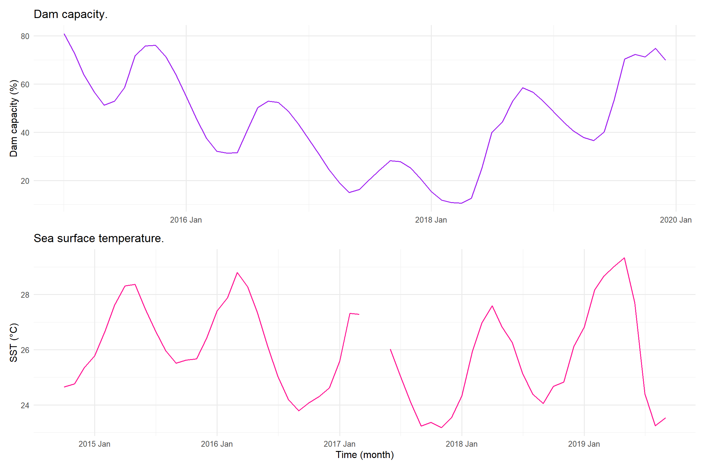
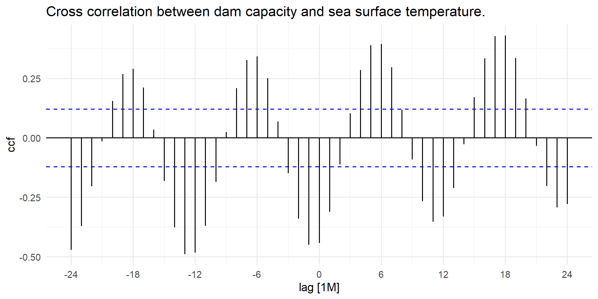
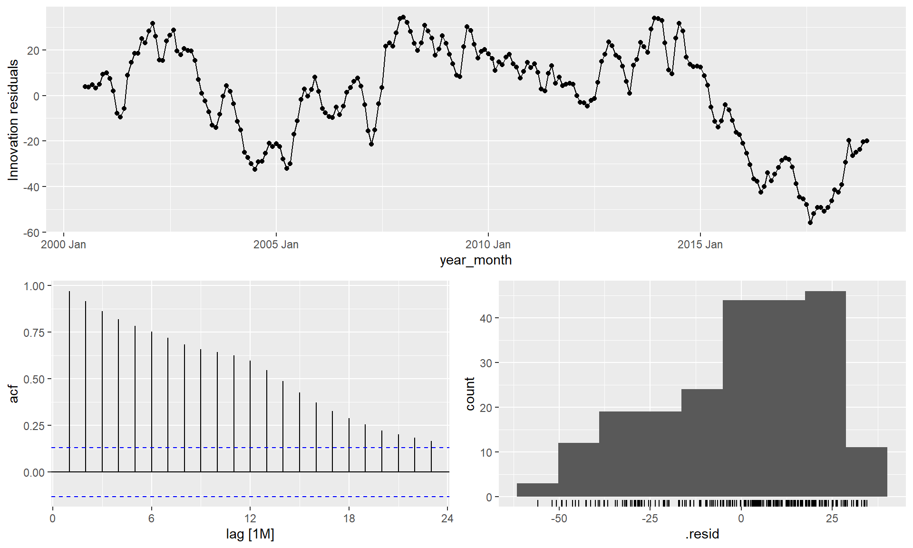
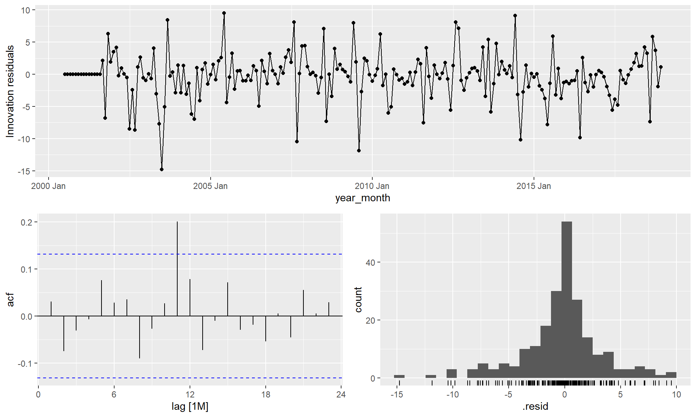
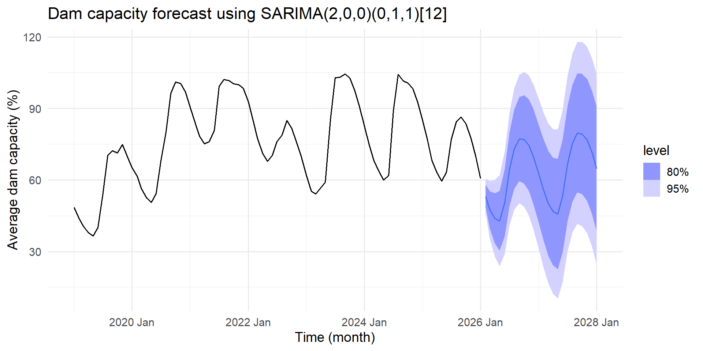
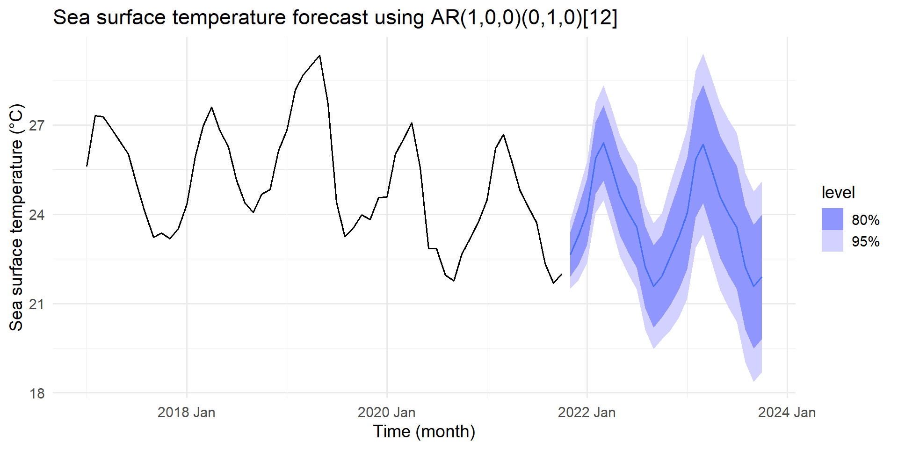

Predicting drought in the Western Cape
This project fits and compares autoregressive models (AR, MA, ARMA, SARIMA) to the Theewaterskloof dam level and eastern Pacific sea surface temperature (SST) individually. SST is then included as a covariate in a SARIMAX model to determine if it can be used to improve dam level forecasts.
Section & Topic: Autoregressive Models
Project Type: Model implementation
Aim: Are the sea surface temperature in the eastern Pacific Ocean and the Theewaterskloof dam levels predictable?
Data Used:
[https://www.pmel.noaa.gov/tao/drupal/disdel/] [https://odp-cctegis.opendata.arcgis.com/]Methods Used: AR, MA, ARMA, SARIMA, SARIMAX (dynamic regression with sea surface temperature as a predictor), compared against Mean, Naive, Seasonal naive and Drift benchmarks.
The aim of this project is to use autoregressive models to forecast Theewaterskloof Dam levels and eastern Pacific sea surface temperature (along 95W), individually, as well as using SST as a lagged predictor to try and improve dam-level forecasts. This project will be used to test the hypothesis that eastern Pacific SST can be used as a leading indicator of drought risk in the Western Cape.
The El Niño phase of the El Niño Southern Oscillation (ENSO) is characterised by anomalous warming of sea surface temperatures in the eastern and central Pacific Ocean. This phenomenon typically starts between March and June, reaching its peak around the following December/January (Mason, 2001). An El Niño event typically causes warm and dry conditions over Southern Africa, with effects emerging within the year following the El Niño onset in the Pacific (Thomson et al., 2003). Over the 2015-2016 season, Southern Africa experienced severe drought with the 2015/2016 El Niño being identified as a contributing factor. This saw a drop in dam levels and severe water restrictions being implemented.
The South African Weather Service (SAWS) is warning against a super El Niño event in 2026-2027, as current sea surface temperatures rise beyond the threshold used to define a very strong El Niño (Mail & Guardian, 2026).
This project focuses on Theewaterskloof Dam, the single largest reservoir in the Western Cape Water Supply System.
Key Findings
Reflections
Links
- Detailed Analysis & Code Script[cite: 1]
Exploratory Data Analysis
The duplicate observation in the Dam_Levels_from_2000 dataset was removed by retaining only the first occurrence of each date. The dam level series contained only 1 missing value that was left as NA.

Both Figure 1 and Figure 2 show that these series are noisy. The dam levels data has multiple year drops and slow recoveries whereas the SST oscillates more uniformly around its mean. The daily data is aggregated to monthly averages to obtain a clearer visualisation of the seasonality present in the data and to smooth out high frequency noise.


As seen in Figure 3 and Figure 4, both datasets display strong 12-month seasonal patterns. The dam level data also has an irregular drought/recovery cycle that appears to follow the hydrological cycle.
Both the Dam_Levels_from_2000 dataset and the sst dataset have observations from 2000 to 2026. The SST series has two periods of missing observations, November 2021 to March 2023 and October 2024 to March 2025, due to the buoy array not recording. These gaps cannot be reliable smoothed over and have been left as missing observations.
Southern Africa experienced a severe drought between 2015 and 2018. In the figures below, dam capacity across this period is compared with lagged SST, approximately 3 months earlier.

In Figure 5, dam capacity declines to reach a minimum around 2018 and then recovers through 2019. The SST series has missing values for March and April 2017 but still shows a slightly elevated double peak in both 2015 and 2016. This is consistent with the El Niñothat occurred during that period. Both series maintain their strong seasonal patterns, however it is difficult to determine the lagged relationship.

Figure 6 re-illustrates the cycle identified in Figure 5. With the seasonality of the series removed, dam capacity decreases smoothly to a minimum around 2018 and recovers steadily through 2019. Rising SST in the deseasonalised plot precedes the decreased dam capacity during the 2015 to 2016 period, however during the 2018 to 2019 recovery phase, SST is rising. This suggests that the relationship between dam capacity and SST is not a stable relationship across the whole period and that other drivers are likely contributing to the dam level recovery.

Figure 7 illustrates the strong seasonal pattern already identified in Figure 3 and Figure 4. Dam levels reach a minimum around May and peak in September. The variation in dam levels within the months is approximately the same across all months. SST peaks in April and is lowest in September. Unlike the dam levels, the months with lower temperatures experience greater variability in the recorded temperatures compared to months where the temperature is higher. Dam capacity (%) and SST (°C) are measured on different scales. This means that the two series’ overall variability cannot be directly compared. It is worth noting that the structural gaps present in the sea surface temperature series result in some months having more observations than others.


Both Figure 8 and Figure 9 indicate that these time series are non-stationary. The ACF of the sea surface temperature illustrates a regular seasonal pattern with sharp peaks occurring at regular intervals compared to the ACF of dam levels which has a less stable seasonal pattern seen by the less regularly-spaced peaks. This suggests that the dam level pattern is influenced by a long-term irregular hydrological cycle as opposed to the seasonal rainfall pattern alone. Both PACF plots have a large spike at lag 1. This is typical of a non-stationary process. The dam level PACF plot has a large negative spike at lag 2, indicative of an AR(2) process. This is followed by a few significant positive spikes that indicate a further short-run structure. The SST PACF plot has the same pattern as the dam levels PACF plot, with a large positive spike at lag 1 followed by a large negative spike at lag 2. There is also a second series of significant positive spikes from lag 7 to 10. The order selection for the AR and SARIMA models is based on the ACF and PACF plots of the seasonally differenced series.


Figure 11 plots the decomposition of the sea surface temperature series. There are missing observations from November 2021 to March 2023 and October 2024 to March 2025. These observations have been interpolated, not observed, for completeness of the decomposition across the entire series and should not be interpreted as true measurements.
As seen in Figure 10 and Figure 11, both the dam level and sea surface temperature series show strong seasonal trends with Figure 10 showing multi-year drought and recovery cycles. There are noticeable dips in 2005 and, more severely, 2018, as opposed to a stable long-run trend. The SST trend is more stable than the dam trend for majority of the observed period. This can be attributed to SST being driven by the annual warming and cooling due to heating angles whereas dam levels are driven not only by seasonal patterns but also by the long-term irregular hydrological cycle. Towards the end of the SST series there is a sharp drop followed by a steep increase, this is consistent with the predicted 2026/2027 El Niñoeven but should be interpreted carefully.
Model fitting
This project fits and compares AR,MA,ARMA and SARIMA against the benchmark models: Mean, Naive, Seasonal naive and Drift, for both the Dam_Levels_from_2000 and sst datasets. A time series regression model is then fit on Dam_Levels_from_2000 using the sea surface temperature as a predictor to determine if sea surface temperature in the eastern Pacific can improve the prediction of Theewaterskloof dam levels to aid in drought prediction.

Figure 12 shows the ACF and PACF of both the dam level and SST series after seasonal differencing. The dam level ACF decays monotonically from lag 1. The PACF has significant spikes at lags 1 and 2, this is consistent with the AR(2) structure identified in the EDA. There are some significant spikes at lags 12-14 which is more indicative of a seasonal MA term than a seasonal AR term. The SST PACF is noisier than the dam level one, with a few additional significant spikes. This irregular autocorrelation structure provides evidence that SST does not reduce to a low-order SARIMA model.
Theewaterskloof dam capacity
Dam level data are available from 2000 to 2026. The most recent 2 years are held out as a test set and the remainder is used as the training set. SST uses the clean pre-2021 dataset with the last two years, 2020-2021 as the test set and the previous years as the training set.
| Model | RMSE | MAE | MAPE (%) | CRPS |
|---|---|---|---|---|
| AR | 29.244 | 24.587 | 33.246 | 16.921 |
| ARMA | 24.536 | 20.176 | 27.346 | 13.399 |
| Drift | 19.590 | 16.836 | 24.383 | 11.978 |
| MA | 14.809 | 12.188 | 16.576 | 8.359 |
| Mean | 16.144 | 13.067 | 15.544 | 9.499 |
| Naive | 18.977 | 16.266 | 23.542 | 11.641 |
| SARIMA | 14.855 | 11.578 | 15.990 | 7.840 |
| Seasonal naive | 15.560 | 12.768 | 17.006 | 9.164 |
From the error metrics displayed in Table 1, RMSE classifies MA as the optimal model (14.809), MAPE(%) classified Mean as the optimal model (15.544) while both MAE and CRPS show SARIMA having the lowest errors (11.578 and 7.840 respectively). This suggests that the optimal model for the dam levels series is the SARIMA model. Both AR and ARMA perform poorly across all metrics, indicating that a large amount of the series predictability comes from the seasonal component as opposed to just short-run autocorrelation.
| Model | RMSE | MAE | MAPE (%) | CRPS |
|---|---|---|---|---|
| SARIMA (p=1) | 14.855 | 11.578 | 15.990 | 7.840 |
| SARIMA (p=2) | 7.484 | 6.091 | 7.988 | 4.946 |
Table 2 shows the error metrics for a SARIMA(1,0,0)(1,1,0)[12] model compared to a SARIMA(2,0,0)(0,1,1)[12]. The second model outperforms the first, roughly halving every error metric, and is thus the final model selected for the dam level series.
Eastern Pacific sea surface temperature
| Model | RMSE | MAE | MAPE (%) | CRPS |
|---|---|---|---|---|
| AR | 1.785 | 1.420 | 5.898 | 1.035 |
| ARMA | 1.990 | 1.642 | 6.833 | 1.184 |
| Drift | 1.773 | 1.545 | 6.531 | 1.104 |
| MA | 2.376 | 2.073 | 8.551 | 1.590 |
| Mean | 2.289 | 1.918 | 8.333 | 1.392 |
| Naive | 1.775 | 1.547 | 6.540 | 1.096 |
| SARIMA | 2.025 | 1.818 | 7.615 | 1.361 |
| Seasonal naive | 2.440 | 2.158 | 8.898 | 1.596 |
Table 3 provides the error metrics for all the fitted models, with the model ranking remaining fairly similar across all metrics. The seasonal naive and SARIMA models perform poorly in comparison to the ARMA model, suggesting that the seasonal component in this series does not provide the same level of predictability as it did in the dam levels data. This agrees with Figure 12 which illustrated noisier post-seasonal differencing in the PACF plot. AR is the optimal model overall, outperforming Drift and Naive on MAE, MAPE and CRPS, although Drift and Naive have slightly lower RMSE values. This suggests that the short-run autocorrelation aids in prediction as opposed to the seasonality present in the series.
Predicting drought using sea surface temperature as a covariate
The above fitted models model the dam level and SST independently. Next, a dynamic regression (SARIMAX) model is fitted using lagged SST as a predictor of dam levels. This is done to try and achieve the projects aim of predicting drought in the Western cape using eastern Pacific sea surface temperature.

The CCF in Figure 13 oscillates with approximately a 12 month period. This is seen by the troughs at -24,-12,0,12 and 24 and peaks at -18,-6,6 and 18. This illustrates the seasonal pattern already observed in Figure 3 and Figure 4 and does not necessarily indicate a clean lead-lag relationship. Considering the lags for where SST precedes dam levels, the strongest correlation is at lag 6. This is used as the optimal lag in the SARIMAX model.
Series: current_mean
Model: TSLM
Residuals:
Min 1Q Median 3Q Max
-55.847 -15.098 4.431 17.767 34.469
Coefficients:
Estimate Std. Error t value Pr(>|t|)
(Intercept) -107.311 26.094 -4.112 5.53e-05 ***
sst_lag 6.866 1.017 6.754 1.27e-10 ***
---
Signif. codes: 0 '***' 0.001 '**' 0.01 '*' 0.05 '.' 0.1 ' ' 1
Residual standard error: 22.14 on 220 degrees of freedom
Multiple R-squared: 0.1717, Adjusted R-squared: 0.168
F-statistic: 45.62 on 1 and 220 DF, p-value: 1.2658e-10The Time Series Linear Model baseline suggests that dam level is significantly related to lagged SST (6 months prior). This baseline model has a small adjusted R\(^2\) value (0.168) indicating that SST alone is a weak predictor of dam levels. What is interesting to note is that the positive sign of the coefficient (6.866) suggests that warmer SST is associated with higher dam levels, this is opposite to what was expected.

Figure 14 shows strongly correlated residuals in benchmark linear model with the ACF decaying gradually from approximately 1 at lag 1. It is also clear that the residuals are not white noise which violates the assumption of independent residuals that Time Series Linear Models make. This motivates modelling the errors using a SARIMA model.
| Term | Estimate | Std. Error | t value | p value |
|---|---|---|---|---|
| ar1 | 1.397 | 0.064 | 21.872 | 0.000 |
| ar2 | -0.421 | 0.064 | -6.602 | 0.000 |
| sma1 | -0.767 | 0.049 | -15.751 | 0.000 |
| sst_lag | -0.018 | 0.606 | -0.029 | 0.977 |
Table 4 indicates that if the errors are modelled using SARIMA(2,0,0)(0,1,1)[12], the same model specified when modelling dam levels individually, SST is insignificant (\(p = 0.977\)). All non-SST terms are statistically significant (\(p < 0.001\)). This confirms that the dam level series is explained by its own history as opposed to SST in the eastern Pacific. The significant relationship found in the baseline linear model can be attributed to shared persistence and seasonality as opposed to genuine predictions from SST.

In comparison to Figure 14, Figure 15 confirms that modelling the errors using a SARIMA model fixes the autocorrelation issue present in the baseline linear model aside from one marginal spike at the seasonal lag. Thus, the SARIMA(2,0,0)(0,1,1)[12] structure is appropriate for the dam level series autocorrelation.
| Model | RMSE | MAE | MAPE | CRPS |
|---|---|---|---|---|
| Time series linear model | 24.439 | 21.562 | 31.210 | 14.365 |
| Naive | 27.803 | 22.852 | 29.182 | 15.004 |
| Dynamic regression | 28.376 | 24.016 | 30.727 | 15.990 |
| SARIMA | 28.395 | 24.029 | 30.741 | 16.011 |
| Drift | 28.843 | 23.716 | 30.172 | 15.494 |
| Seasonal naive | 43.739 | 40.221 | 57.533 | 28.092 |
Table 5 shows that the dynamic linear regression model is approximately equivalent to the SARIMA model when compared on the same test set. This is expected since the lagged SST added no improved prediction accuracy in the linear regression model when the errors were modelled with SARIMA. Although the error values for the benchmark linear model are on average the lowest out of all models, this is misleading. Figure 14 showed clear autocorrelated residuals and thus the model is not correctly modelling a genuine predictive relationship but rather a short-run overlap due to both dam levels and SST sharing an upward trend from 2018 to 2019 (Figure 6). This provides no evidence that eastern Pacific sea surface temperatures improve dam level forecasts more than what the series history does.
Forecasting
Theewaterskloof dam capacity

Figure 16 shows the forecast using SARIMA(2,0,0)(0,1,1)[12] on the dam levels series through 2026 and 2027. The strong seasonal cycle is maintained although the forecasted peaks are slightly lower than the previous few years. The model is reverting back towards more typical levels as opposed to just extrapolating the most recent observations. The uncertainty associated with these forecasts grows substantially with the forecast horizon. Since this model is built on its own history with no covariate added it cannot predict the onset of an El Niñoevent nor drought in the Western Cape.
Eastern Pacific sea surface temperature

Figure 17 shows the forecast using AR(1,0,0)(0,1,0)[12] on the sea surface temperature series through 2022 and 2023. The series maintains its strong seasonal pattern with temperatures peaking around 26°C and dropping to approximately 22°C. This is similar to the historical pattern. Uncertainty in the prediction intervals grows with the forecast horizon but not as much as for the dam level series. The prediction only extends into 2023 since the model was built on pre-2021 data due to large portions of missing observations after 2021. A simple AR process is unable to predict unprecedented events as the model forecasts revert towards typical seasonal values. Even if the model was forecasting into 2027 it would be unable to pick up the anticipated 2026/2027 El Niñoevent.
Discussion
Model recommendations
The optimal model for the Theewaterskloof dam capacity series is the SARIMA(2,0,0)(0,1,1)[12] model. This model was selected based on the PACF plot in Figure 12 as well as a comparison of its error metrics with the initial SARIMA model specification. For sea surface temperature, Figure 12’s PACF plot suggested that SST prediction would not be improved by a more complex seasonal model. This was confirmed when the AR(1,0,0)(0,1,0)[12] model, on average, outperformed all other candidate models, when their error metrics were compared. Using SST as a lagged predictor for dam capacity was statistically insignificant as it did not improve predictive accuracy beyond what the series history already did.
Limitations
There were several limitations when working with these datasets. The structural gaps present in the SST series (November 2021 - March 2023, October 2024 - March 2025) meant that the regression analysis could only use pre-2021 data. This loss of information decreased the size of the training set and meant that the model could not predict into 2027, when the super El Niñois anticipated.
The CCF-derived 6 month lag is consistent with the typical literature-motivated 3-6 month window for El Nino, however, the CCF is dominated by the common 12-month seasonality of both the series rather than a clean lead-lag signal. Thus, it cannot be accurately determined if a 6 month lag is the true lag.
Improvements
To predict drought in the Western Cape, it would be more useful to use rainfall data as this has a direct impact on dam levels. Monitoring water usage across the country may also provide improved predictive information that eastern Pacific sea surface temperature.
The structural gaps in the SST data could be worked around by using a more comprehensive set of buoy observations that span a wider longitudinal range than the single 95W array used here. By replacing the buoy array with an array that averages over a larger region of the Pacific, there would be fewer missing observations and the series would not need to be truncated to avoid large structural gaps. The El Niño Southern Oscillation (ENSO) moves through El Nino, La Niña and neutral periods. It may be useful to use a regime-switching model that would capture this variability as opposed to a model with fixed coefficients.
References
Mason, S. J. (2001). El Niño, climate change, and Southern African climate. Environmetrics, 12(4), 327-345. https://doi.org/10.1002/env.476
Thomson, M. C., Abayomi, K., Barnston, A. G., Levy, M., & Dilley, M. (2003). El Niño and drought in southern Africa. The Lancet, 361(9358), 626-627. https://doi.org/10.1016/S0140-6736(03)12421-X
Mail & Guardian. (2026, September 1). The SAWS warns exceptionally strong 2026/2027 El Niño could bring severe heatwaves to SA. https://mg.co.za/the-green-guardian/2026-09-01-the-saws-warns-exceptionally-strong-2026-2027-el-nino-could-bring-severe-heatwaves-to-sa/